Yağlıboya resimlerde nesneler çoğu zaman oldukları gibi gösterilir. Gerçekte bunlar satınalınabilir nesnelerdir. Bir nesnenin resmini yaptırıp aldığınızda onu beze geçirtmek o şeyi satın alıp evinize koymaktan pek de değişik bir şey değildir. Böylece bir resmi satın aldığınızda o resimde gösterilen nesnelerin görünüşünü de satın almış olursunuz.
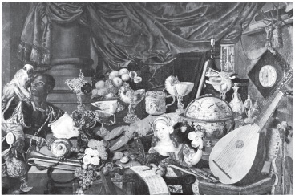
OXNEAD SALONU'NDA PASTON ZENGİNLİKLERİ, HOLLANDA OKULU, 1665
Bir nesneye sahibolmakla yağlıboya resimde o nesnenin görüntüsüne sahibolmak arasındaki benzerlik sanat uzmanlarıyla sanat tarihçilerinin çoğunlukla görmezlikten geldikleri bir öğedir. Bu benzerliği yakalamaya en çok yaklaşan kişinin bir insanbilimci olması dikkate değer.
Şöyle diyor Lévi-Strauss*:
Batı uygarlığında sanatın gözebatan özgün çizgilerinden birini oluşturan şey bence, sahibin ya da giderek seyircinin o nesneye sahibolma konusunda gösterdiği güçlü ve tutkulu istektir.
Bu doğruysa —Lévi-Strauss genellemesinin tarihsel kapsamını çok geniş tutmuş olabilir— bu eğilim, geleneksel yağlıboya resim döneminde doruğuna ulaşmıştır.
Yağlıboya resim terimi bize bir yöntemden öte birşeyler söyler. Bir sanat türünü tanımlar. Boyaları yağla karıştırma yöntemi çok eski zamanlardan beri biliniyordu. Ne var ki bir sanat türü olarak yağlıboya resim bu yöntemin geliştirilmesi, iyi bir duruma getirilmesinden sonra doğdu (bu da tahta levhalar yerine bezin kullanılmasına yol açtı). Yağlıboya resim, tempera ya da fresko teknikleriyle anlatılamayacak bir yaşam görünüşü vermek için geliştirildi. Başlangıçta yağlıboya —Kuzey Avrupa’da on sekizinci yüzyılın başında— yepyeni özellikler taşıyan resimler yapmak için kullanılıyordu. Bu özellikler çeşitli ortaçağ sanat törelerinin etkisiyle bir ölçüde gölgelenmişti. Yağlıboya resmin kendi koşullarına, kendi görüş biçimine bütünüyle ulaşması on sekizinci yüzyıla dek gerçekleşemedi.
Yağlıboya resim döneminin bitiş tarihi de tam olarak saptanamaz. Bugün bile yağlıboya resim yapılmaktadır. Ne var ki yağlıboya resimdeki geleneksel görme biçimi izlenimcilikle sarsılmış, Kübizm’le yıkılmıştır. Bütün bunlar olurken fotoğraf görsel imgelerin başlıca kaynağı olarak yağlıboya resmin yerine geçmiştir. Bu nedenlerle geleneksel yağlıboya resim dönemi kabaca 1500’le 1900 arası olarak saptanabilir.
Oysa bu gelenek ekinsel varsayımlarımızın çoğuna biçim vermektedir. Resimsel benzetmeden ne anladığımızı belirleyen odur. Doğa görüntüleri, kadınlar, yiyecekler, soylular ve mitler gibi konuları görme biçimlerimizi bugün bile resmin koşulları etkilemektedir. Bu gelenek bize ‘sanat dehası’nın anatiplerini verir. Bu geleneğin tarihinde bize, bir toplumda sanatı seven bireyler varsa o toplumda sanatın geliştiği öğretilir.
Nedir sanat sevgisi denen şey?
Bu gelenekten gelen, konusu bir sanatsever olan şu resme bakalım.
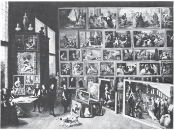
ÖZEL RESİM GALERİSİNDE ARŞİDÜK LEOPOLD WILHELM, TENIERS 1582–1649
Bu resim neyi gösteriyor?
On yedinci yüzyılda ressamların resimlerini yapıp kendilerine sattıkları türden bir adamı gösteriyor.
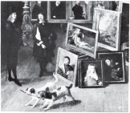
Bu resimler nedir?
Bunlar herşeyden önce satın alınıp sahibolunabilecek nesnelerdir. Biricik nesnelerdir. Bir sahip resimleriyle çevrelendiği gibi müzik ya da şiirle çevrelenemez.
Burada toplayıcı sanki resimlerden yapılmış bir evde oturmaktadır. Bu resimden duvarların taş ya da tahta duvarlara üstünlüğü nedir?
Bunlar efendiye özel görünüler sunar: Onun sahibolduğu görünüleri sunar.
Gene Lévi-Strauss toplanan resimlerin, toplayıcının Kıvancını, sevilmesi gereken şeyleri gösterdiğini şöyle yorumluyor:
Yenidendoğuş’ta, sanatçılara göre resim bir bilgi aracıydı belki, ama aynı zamanda bir mülk aracıydı da. Yenidendoğuş resmine eğildiğimizde bunun Floransa’da, daha başka yerlerde biriken sınırsız zenginlikler yüzünden gerçekleşebildiğini, zengin İtalyan tüccarların ressamlara dünyada güzel, istenir olan herşeyi onların mülküne sokabilecek aracılar gözüyle baktıklarını unutmamalıyız. Floransa saraylarındaki resimlerle küçük bir dünya oluşmuştur: Bu dünyada mülk sahibi, sanatçılarına, dünyada kendisi için değerli olan herşeyi ulaşabileceği bir yerde, olabilecek en gerçek biçimde yeniden yarattırmıştır.
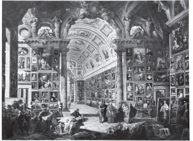
KARDİNAL VALENTI GONZAGA'NIN RESİM GALERİSİ, PANINI 1692–1765/8
Her dönemde sanat yönetici sınıfın ülküsel çıkarlarına hizmet eder. 1500’le 1900 yılları arasında Avrupa sanatının da hepsi değişik biçimlerde anamalın yeni gücüne yaslanan yönetici sınıflar dizisine hizmet ettiğini söylersek yeni bir şey söylemiş olmayız. Bizim burada söylemek istediğimiz daha kesin bir şeydir: Mülke ve alışverişe karşı edinilen yeni tutumlarla belirlenen dünyayı görme biçimleri görsel anlatımını yağlıboya resimde bulmuştur. Başka bir görsel sanat türünde bulamazdı zaten.
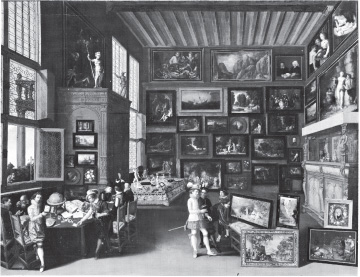
BİR SANAT GALERİSİNİN İÇİ, FLORANSA OKULU 17. YÜZYIL
Anamalın toplumsal ilişkilerde yaptığı etkiyi, yağlıboya resim görünülerde yapmıştır. Resim, herşeyi nesnelerin eşitliğine indirgedi. Her şey alınıp satılabilir oldu çünkü her şey mala dönüştü. Tüm gerçeklik, hiç düşünülmeden onun taşıdığı maddesel değerle ölçülür oldu. Karteziyen dizge yüzünden ruh ayrı bir ulam olarak düşünüldü. Bir resim —konusuyla— ruha seslenebilirdi ama hiçbir zaman gösterdiği nesneyle yapamazdı bunu. Yağlıboya resim bütünüyle dıştan verilen bir görünü sunuyordu.
Bu sava ters düşen resimler geliyor hemen akla: Rembrandt’ın, El Greco’nun, Giorgione’nin, Vermeer'in, Turner’in vb.nın yapıtları. Oysa bu yapıtları tüm olarak gelenekle karşılaştırarak incelersek onların çok özel bir biçimde geleneğin dışında kaldıklarını görürüz.
Bu gelenek tüm Avrupa’ya dağılan yüz binlerce yağlıboya resim (bez) ve tablodan oluşuyordu. Bunların büyük bir kesimi günümüze kalmadı. Kalanların da çok küçük bir bölümü bugün güzel sanat yapıtı olarak görülüyor. Bunların arasından daha küçük bir bölümü de ‘ustalar’ın yapıtları olarak tanıtılıyor, yeniden-canlandırılıp duruyor.
Sanat müzelerini gezenler sergilenen yapıtların çokluğu karşısında şaşırıyorlar. Bu yapıtların ancak birkaçına yoğunlaşabilmelerini kendi eksiklikleri sayıyorlar. Aslında böylesi bir tepki çok anlaşılabilir bir şeydir. Sanat tarihi, olağanüstü yapıtlarla Avrupa geleneğinin sıradan yapıtları arasındaki ilişkiyi hiç yakalayamamıştır. Bu sorun dehayla açıklanamaz. Bu yüzden sanat galerilerinin duvarlarında görülen kargaşa —temelde bunları ayıran şeyin ne olduğunun açıklanmasını bırakın— hiç farkedilmeden öylece sürüp gider. Olağanüstü bir yapıt üçüncü sınıf yapıtlarla çevrelenmiş durumdadır.
Her türlü ekinin sanatında çok büyük bir yetenekler çeşitliliği görülür. Oysa başka hiç bir ekinde başyapıtlarla sıradan yapıtlar arasındaki ayrım yağlıboya geleneğindeki ayrım ölçüsünde büyük değildir. Yağlıboya geleneğindeki ayrım yalnızca yetenek ya da imgelem sorunu değil, aynı zamanda ahlaksal bir sorundur. Sıradan sanat yapıtları on yedinci yüzyıldan sonra gittikçe artan bir siniklikle yapılır oldu. Başka deyişle ressamın gözünde, resim diliyle anlatılan değerler, ısmarlanan resmin bitirilmesinden, satılmasından çok daha önemsizdi. Şişirilivermiş resimler beceriksizlikten ya da taşralılıktan değil pazarın isteklerinin sanatın isteklerine ağır basmasından dolayı öyle yapılıyordu. Yağlıboya resim dönemi açık sanat pazarlarının doğmasıyla birlikte başlamıştır. Olağanüstü yapıtla sıradan yapıt arasındaki zıtlıkla uyuşmazlığın nedeni sanatla pazar arasındaki bu çelişkide aranmalıdır.
Daha sonra ele alacağımız olağanüstü yapıtların varlığını şimdilik bir yana bırakarak önce geleneği ele alalım.
Yağlıboya resmi öbür resim türlerinden ayıran şey, nesnelerin dokunulabilirliğini, dokusunu, parlaklığını ve katılığını yansıtabilmedeki üstünlüğüdür. Yağlıboya gerçek nesneleri elimizle dokunabilecekmişiz gibi gösterir bize. Bu tür resimdeki imgelerin iki boyutlu olmasına karşın gözü aldatma etkisi yontunun etkisinden çok daha büyüktür. Çünkü yağlıboya, nesnelerin renklerini, dokularını, sıcaklıklarını yansıtabilir. Nesnelerin bir yeri kapladığını bize imleme yoluyla gösterir.
Holbein’in resmi Elçiler (1533) bu geleneğin başlarında yapılmıştır. Geleneğin başlangıcındaki yapıtların çoğu gibi bunun özellikleri apaçık ortadadır. Bu resmin yapılış biçimi neyi gösterdiğini belirler. Nasıl yapılmıştır öyleyse bu resim?
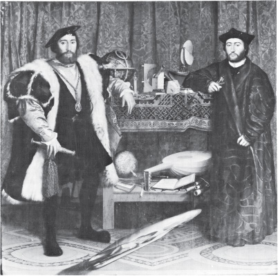
ELÇİLER, HOLBEIN 1497/8–1543
Bu resim seyredende gerçek nesnelere, malzemelere baktığı sanrısını uyandırmak üzere büyük bir ustalıkla yapılmıştır. Birinci denemede dokunma duygusunun sınırlı, durağan bir görme duygusu olduğunu belirtmiştik. Bu resim yüzeyinin her kesimiyle bir yandan salt görsel etki uyandırırken bir yandan da dokunma duygusunu kullanmaya çağırır bizi. Göz kürkten başlayarak ipeğe, madene, tahtaya, kadifeye, mermere, kâğıda ve keçeye doğru kayar. Her kaymada gözün resimde gördüğü şey dokunma duygusu diline çevrilir. Resimdeki iki adamın belli bir ağırlığı vardır. Adamlar fikirleri simgeleyen birçok nesneyle çevrelenmiştir. Oysa resimde ağır basan şey, adamları çevreleyen, onların vücutlarını örten malzemeler ve kumaşlardır.
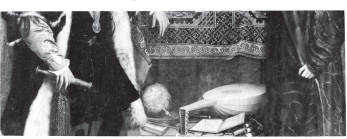
Resimde yüzler ve eller dışında kalan yüzeylerin hepsinde dokumacıların, nakışçıların, halıcıların, kuyumcuların, dericilerin, mozaikçilerin, kürkçülerin, terzilerin, sarrafların herseyi nasıl inceden inceye işledikleri göze çarpıyor. Sonra da bu ince işçiliğin, bundan doğan yüzey zenginliğinin, resmi yapan Holbein tarafından yeniden nasıl ince bir biçimde resme geçirildiği görülüyor.
Bu vurgulama, bunun ardında yatan ustalık yağlıboya resim geleneğinin değişmez bir öğesi olarak kalacak biçimde ortaya konmuştur.
Daha önceki sanat geleneklerinde sanat yapıtları zenginliği gösteriyordu. Şu var ki servet o zaman değişmez bir toplumsal ya da dinsel düzenin simgesiydi. Yağlıboya resimde yepyeni bir zenginlik sergileniyordu —tek haklı nedenini paranın satınalma gücünde bulan bir zenginlikti bu. Böylece resim parayla satın alınabilecek şeylerin istenirliğini gösteren bir şey oluyordu. Satın alınabilecek nesnelerin görsel istenirliği de dokunulabilecek nesneler olarak bunların sahibin dokunma duygusuna, eline nasıl cevap vereceklerini gösteriyordu.
Holbein’in Elçiler adlı yapıtının önünde gizemli, yan yatmış, söbü bir şey vardır. Çok çarpıtılmış bir kafatasıdır bu; çarpıtıcı bir aynada yansıyan bir kafatası. Kafatasının resme nasıl girdiği, elçilerin bunu neden istediği konusunda çeşitli yorumlar vardır. Yorumların hepsi bunun bir tür ölüm simgesi olduğunda birleşir. Ortaçağ da, kafatası ölümün varlığını sürekli anımsatan bir imge olarak kullanılıyordu. Bizim savımız açısından önemli olan bu kafatasının resimdeki öbür şeylere göre (gerçek anlamda) bambaşka bir görüş açısından verilmiş olmasıdır. Kafatası da resmin geri kalan kesimi gibi resmedilseydi fizikötesi anlamı kalmazdı. O da öbürleri gibi bir nesne, ölü iskeletinin bir parçası olurdu.
Gelenek buyunca sürüp giden bir sorundur bu. Fizikötesi simgeler resme sokulduğunda (sonraları resme ölüm simgesi olarak gerçek kafatasları koyan ressamlar da vardır) resim yönteminin katı ve cansız olması yüzünden bu simgeler, çoğu zaman inandırıcı ya da doğal bir etki uyandıramıyordu.
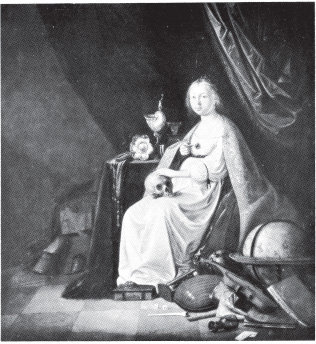
KENDİNE HAYRANLIK, POORTER 1608–1648
Bu gelenekte yer alan sıradan dinsel resimlere yalancılık havası veren de aynı çelişkidir. Konunun resme geçiriliş biçimi temanın anlatmak istediği şeyi ortadan kaldırıyordu. Yağlıboya, kendine özgü akışından kurtulamadığından sahibine dokunma duygusu zevki vermeden edemiyordu. Şimdi Maria Magdalena’nın şu üç resmine bakalım.
OKUYAN MAGDELEN, AMBROSIUS BENSON ATÖLYESİ, 1519–1550 ARASI AÇIK
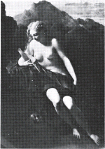
MARY MAGDALENE, VAN DER WERFF 1659–1722
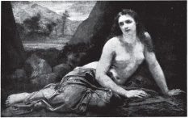
TÖVBE EDEN MAGDELEN, BAUDRY SALONU, 1859
Öyküde vurgulanan şey Magdalena’nın İsa’yı çok sevdiği, bu yüzden geçmişinden pişmanlık duyduğu, tövbe ederek bedenin ölümlülüğünü, ruhun ölmezliğini kabul ettiğidir. Oysa resimler, yapılış biçimleriyle bu öykünün özüne ters bir şey söyler. Resimlere bakılırsa Magdalena’nın yaşamında tövbe edişinin getirdiği o büyük değişim hiç olmamış gibidir. Magdalena’nın ettiği söylenen tövbe yağlıboya resim yöntemiyle gösterilemez. Magdalena her şeyden önce dokunulabilir, istenir bir kadın olarak gösterilmiştir. Burada Magdalena resim yöntemine boyun eğmiş bir nesne durumundadır.
William Blake’in olağanüstü yerini belirtmek ilginç olacaktır burada. Bir çizgi ressamı, bir oyma baskıcı olarak Blake geleneğin kurallarını öğrenerek yetişmiştir. Oysa resim yapmaya başladığında hemen hemen hiç yağlıboya kullanmamıştır. Çizgi resmin geleneksel törelerine bağlı kalmasına karşın yaptığı insan resimlerinin ağırlıklarını yitirmeleri, saydamlaşmaları, birbirlerinden ayrılamaz olmaları, yerçekiminden kurtulmaları, görünür ama dokunulmaz olmaları, belli bir yüzey olmaksızın ışık saçmaları, nesnelere indirgenemeyecek insanlar olmaları için her seyi yapmıştır Blake.
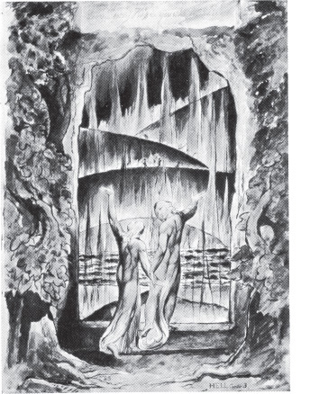
DANTE’NİN İLAHİ KOMEDİSİNİN RESİMLERİNDEN, BLAKE 1757–1827
Blake’in yağlıboyanın ‘maddesel yoğunluğu’nu aşmaya çalışması, bu geleneğin anlamını, sınırlarını çok derinden kavramasından doğmuştur.
Şimdi gene iki elçiye, resimde bunların insan olarak bulunuşlarına dönelim. Resmi başka bir biçimde, çerçevenin içinde gösterdikleri düzeyinde değil, dışında gösterdikleri düzeyinde anlamlandıralım:
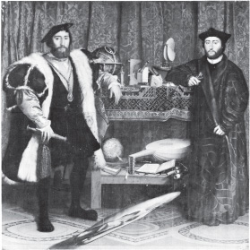
ELÇİLER, HOLBEIN 1497/8–1543
Resimdeki iki adam kendilerinden emin ve resmidirler: Aralarındaki ilişki açısından bakıldığında rahattırlar. Peki, ressama —ya da bize— bakışları nasıldır? Gözlerinden, duruşlarından, kimse onları tanımasa da olurmuş gibi bir şey okunmaktadır. Sanki başkaları onların değerlerini anlayamazmış gibi bir bakış. Adamların ait olmadıkları bir şeye bakar gibi bir halleri vardır. Onları çevreleyen ama adamların dışında kalmak istedikleri bir şeydir bu. En iyisini düşünürsek onları çevreleyen, onları alkışlayan bir kalabalık, en kötüsünü düşünürsek, rahatlarını kaçıran insanlar olabilir bunlar.
Bu gibi adamların dünyanın geri kalan kesimiyle ilişkileri nelerdir?
Resimde adamların arkasındaki rafta görülen nesneler — imleri çözebilen birkaç kişiye — bu adamların dünyadaki yeri hakkında belli bir bilgi vermek amacıyla konmuştur oraya. Dört yüz yıl sonra biz bu bilgiyi kendi görüşümüze göre yorumlayabiliriz artık.
Üst raftaki bilimsel araçlar denizcilikte kullanılıyordu. Deniz yollarının tutsak ticaretine, ticaret gemilerine açıldığı sıralardaydı bu. Öbür kıtaların zenginlikleri bu gemilerle Avrupa’ya aktarılıyordu. Bu zenginliklerle sonra sanayi devrimi'nin çıkış noktası olan anamal birikimi sağlandı.
1519’da Magellan, V. Charles'ın desteğiyle dünyayı dolaşmak için yola çıkmıştı. Magellan'la bu yolculuğu planlayan gökbilimci arkadaşı, kazandıklarının yüzde yirmisini ve ele geçirdikleri topraklardaki yönetim hakkını kendilerine ayıracaklarını İspanya Sarayı’yla yaptıkları bir anlaşmayla saptadılar.
Alt raftaki küre Magellan’ın bu yolculuğunu gösteren yeni bir küredir. Holbein Fransa'da bulunan ve, soldaki elçiye ait olan toprakların adını küreye yazmıştır. Kürenin yanında bir aritmetik kitabı, bir ilâhi kitabı, bir de ut vardır. Bir ülkeyi sömürgeleştirebilmek için insanlarını Hıristiyan yapmak, onlara hesap öğretmek gerekiyordu; böylece onlara dünyada en ileri uygarlığın Avrupa uygarlığı olduğu kanıtlanıyordu. Elbette Avrupa sanatı bunun dışında değildi.
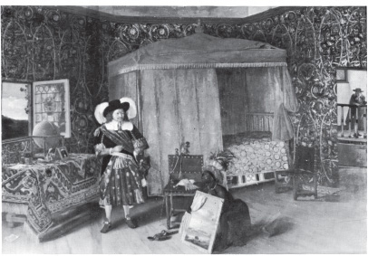
ELMINA ŞATOSUNDA AMİRAL RUYTER, DE WITTE 1617–1692
Bu resimde Afrikalı tutsak, efendisine yağlıboya bir resim gösteriyor. Elindeki resimde Batı Afrika tutsak ticaretinin en önemli merkezlerinden birinde bulunan şato görülüyor.
İki elçinin ilk sömürgeleştirme girişimlerine ne ölçüde doğrudan katıldıkları o denli önemli değildir. Burada bizi ilgilendiren onların dünyaya karşı takındıkları tutumdur. Bu da bir sınıfın genel tutumudur. İki elçi dünyanın kendilerine hizmet etmek için var olduğuna inanan bir sınıfın insanlarıdır. En aşırı biçimiyle bu inanç sömürgecilerle sömürgeleştirilenler arasındaki ilişkileri haklı göstermeye yaramıştır.
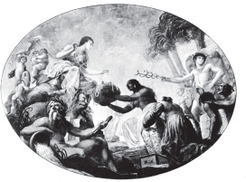
ERITANYA'DA İNCİLERİNİ SUNAN HİNDİSTAN, 18. YÜZYIL
Sömürgeciyle sömürülen arasındaki bu ilişkiler bir bakıma birbirini bileyerek, güçlendirerek sürmüştür. Sömürülenin sömürenine, sömürenin de sömürülene görünüşü kendisinin taşıdığı insanlık-dışı özelliği doğruluyordu. İlişkide yatan kısır döngü —karşılıklı susuşta olduğu gibi— şu biçimde gösterilebilir:
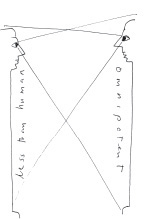
Resimdeki elçilerin bakışı hem tepeden hem de ürkektir. Bakışlarına karşılık beklemezler. İmgelerinin başkalarını hem taşıdıkları koruyucu tavır hem de uzak duruşlarıyla etkilemesini isterler. Eskiden krallar, imparatorlar da insanları bu biçimde etkilerlerdi. Oysa onların imgeleri kendi kişiliklerine bağlı değildi. Burada yeni ve rahatsız edici olan şey uzaklık gösteren bireyselleşmiş imge’dir. Bireycilik eninde sonunda eşitlik düşüncesine yol açıyordu. Oysa eşitliğin düşünülemeyecek bir şey olarak gösterilmesi gerekiyordu.
Bu çatışma resim yapma yönteminde gene ortaya çıkar. Yağlıboya resimlerdeki yüzeysel benzerlik seyirciye resimdeki nesneye —dokunulabilecek ölçüde— yakın olduğu sanısını verir. Resimdeki imge bir insanı gösteriyorsa yakınlık, belli bir kişiye yakın olma duygusu uyandırır.
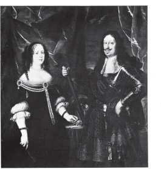
TOSKANALI İKİNCİ FERDINAND VE VITTORIA DELLA ROVERE, SUTTERMANS 1597–1681
Oysa seyirlik yağlıboya portrelerde resim bu uzaklığı belirtmek zorundadır. Bu gelenekteki sıradan portrelerin katı ve cansız olmasına yol açan şey —ressamın teknik yetersizliği değil— bu uzaklıktır. Kendi bakış biçimi açısından yalancılık çok büyüktür, çünkü resme konu olan kişinin aynı anda hem yakından hem de uzaktan görülmesi gerekir.
Benzer bir örnek olarak mikroskop altında incelenen parçaları düşünebiliriz.
Tüm ayrıntılarına dek inceleyebileceğimiz biçimde gözümüzün önündedir bu parçalar, ama onların bizi aynı biçimde gördüklerini düşünmek olanaksızdır.
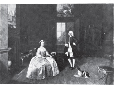
BAY VE BAYAN WILLIAM ATHERTON, DEVIS 1711–1787
Ressamın kendi portresi ya da yakın arkadaşlarının seyirlik olmayan portreleri dışında kalan seyirlik portrelerde bu sorun hiç çözülmemiştir. Oysa gelenek sürdükçe portresi yapılan kişilerin yüzleri gittikçe genelleştirilmiştir.
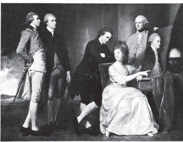
BEAUMONT AİLESİ, ROMNEY 1734–1802
Yüzler, giysilere uyan birer maskeye dönüşmüştür. Bugün bu gelişmenin son evresini sıradan siyaset adamlarının televizyondaki kukla görüntülerinde izleyebiliriz.
Şimdi kısaca yağlıboya resim türlerinden bazılarını gözden geçirelim. Kendi geleneğinin bir parçası olan ama başka hiç bir gelenekle ortaya çıkmayan yağlıboya resim türleridir bunlar.
Yağlıboya resim geleneğinden önce ortaçağda ressamlar, resimlerinde çoğu zaman altın yaldız kullanırlardı. Sonraları yaldız resimlerde görünmez oldu, yalnız çerçevelere sürüldü. Oysa resimlerin çoğu altın yaldızı ya da parayla satın alabilecek başka şeyleri gösteriyordu. Satın alınabilecek bu mallar sonunda sanat yapıtlarının asıl konusu olup çıktı.
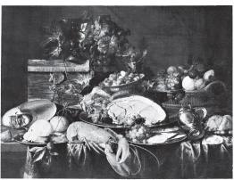
ISTAKOZLU ÖLÜ DOĞA, DE HEEM 1606–1684
Burada yiyecekler görülüyor. Böyle bir resmin sanatçının neleri resme geçirebileceklerini göstermekten öte bir anlamı vardır. Sahibinin zenginliğini, alıştığı yaşama biçimini yansıtır resim.
Hayvan resimleri. Bunlar doğal koşullardaki hayvanları değil ne denli değerli olduklarını göstermek üzere cinsleri vurgulanan, cinsleriyle sahiplerinin toplumsal sınıfını vurgulayan davarlardır. (Dört ayaklı ev eşyaları gibi resme geçirilen hayvanlar.)
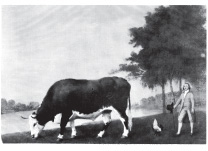
LINCOLNSHIRE ÖKÜZÜ, STUBBS 1724–1806
Nesnelerin resimleri. Çok anlamlı bir biçimde sonraları sanat nesnesi (objets d’art) olarak adlandırılan nesneler.
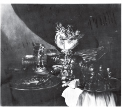
CLAESZ'IN YAPTIĞI SANILAN ÖLÜ DOĞA, 1596/7–1661
Yapıtların resimleri —bazı erken Yenidendoğuş ressamlarının yapıtlarında olduğu gibi mimarlık bakımından kusursuz olan yapıtları değil— babadan oğula geçen taşınmaz mülkü gösteren yapılar.
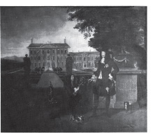
SARAY BAHÇIVANI ROSE'UN II. CHARLES'A ANANAS SUNUŞU, HEWART'IN DANCKERT'TAN YAPTIĞI KOPYA, YAK. 1630–1678/9
Yağlıboya resmin en üstün türü tarihsel ya da mitolojik resimlerdir. Yunan mitolojisini ya da tarihsel kişileri gösteren resimler, ölü-doğalardan, portrelerden ya da açıkhava resimlerinden daha değerli sayılıyordu. Ressamın kendi kişisel şiirini sindirdiği bazı olağanüstü örneklerin dışında bu mitolojik resimler bugün şaşırtıcı bir biçimde boş gelir bize. Hiç erimeyecek balmumundan yapılmış köhne tablolardır bunlar. Oysa zamanında bu denli çok tutulmalarıyla taşıdıkları bu boşluk birbirine doğrudan bağlıdır.
BAY TOWNELEY'LE ARKADAŞLARI, ZOFFANY 1734/5–1810
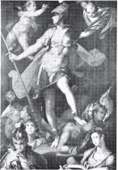
BİLGİNİN UTKUSU, SPRANGER 1546–1627
Çok yakın zamanlara dek —bazı çevrelerde bugün bile— klasiklerin incelenmesine büyük önem verilmiştir. Bunun nedeni klasik metinlerin, değerleri ne olursa olsun, yönetici sınıfların üst katmanlarına bir ölçütler dizgesi sağlamasıdır. Yönetici sınıfların üst katmanları kusursuz davranışlarını bunlara bakarak ölçüyorlardı. Klasikler şiir, mantık ve felsefeyle birlikte bir iyi davranışlar dizgesi oluşturuyordu. Bunlar yaşamın yüce anlamını kahramanlık eylemleriyle, gücün onurlu bir biçimde kullanılmasıyla, tutkuyla, gözüpek ölüme gitmekle, soylu bir biçimde zevk peşinde koşmakla —nasıl yaşanması gerektiğini ya da hiç değilse yaşamın nasıl görülmesi gerektiğini örnekliyorlardı.
İyi ama bu resimler yeniden yaratmak istedikleri görünüleri canlandırmakta neden böylesine eksik, böylesine yetersiz kalmışlardır? İmgelemi uyandırmaya gerek duymadıkları için elbette. Bu gereksinmeyi duysalardı amaçlarını gerektiği gibi gerçekleştiremezlerdi. Bu resimlerin amacı seyirci sahipleri kendilerinden geçirerek yeni yaşantılara götürmek değil, zaten yaşadıkları şeyleri süsleyip püsleyerek onlara yeniden göstermekti. Böylesi resimleri seyrederken seyirci sahip kendi tutkusunun, kendi eliaçıklığının klasikleşmiş çehresini görmek istiyordu. Resimlerde gördüğü kusursuz görünüler, kendini değerlendirirken ona yardımcı ve destek oluyordu. Bu görünülerde seyirci sahip, kendisinin (karısının ya da kızlarının) soyluluğunu başka bir biçimde yeniden buluyordu.
Bazan klasik giysilerin kullanılış amacı yalındı; örneğin Reynolds'un resminde bir ailenin kızlarının Hymen’i Süsleyen Graceler gibi giydirildiğini görüyoruz.
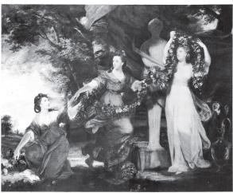
HYMEN'I SÜSLEYEN ÜÇ GRACE, REYNOLDS, 1723—1792
Bazan da mitolojik sahne seyirci sahibin, kollarını kaldırsa üstüne geçirivereceği bir giysi gibidir. Sahnenin maddesel bakımdan yoğun, bu yoğunluğun arkasında gene de boş olması, giyilmesini kolaylaştırıyordu.
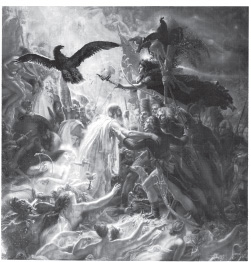
VALHALLA'DA NAPOLYON'UN MAREŞALLARINI KARŞILAYAN OSSIAN, GIRODET 1767/1824
‘Gündelik yaşam’ resimleri denen resimler — ‘düşük yaşam’ı gösteren resimler— mitolojik resimlerin karşıtı olarak görülüyordu. Soylu değil, kabaydı bu resimler. ‘Gündelik yaşam’ resimlerinin amacı — olumlu ya da olumsuz— bu dünyada erdemliliğin toplumsal ve parasal ödüllerle değerlendirildiğini kanıtlamaktı. Böylece —çok da pahalı olmayan— bu resimleri satın alabilenler kendi erdemliliklerini doğrulamış oluyorlardı. Bu tür resimler yeni ortaya çıkan kentsoylular sınıfınca çok tutuluyordu. Kentsoylular kendilerine resimdeki kişileri değil resimde canlandırılan ahlâk dersini yakıştırıyorlardı. Burada gene yağlıboyanın maddesel yoğunluk yanılsaması uyandırma özelliği şu duygusal yalanı inandırıcı kılıyordu: Zengin olanlar dürüst ve çalışkan insanlardı. Hiç bir işe yaramayanlarsa, haklı olarak, hiç bir şeye sahibolamıyorlardı.
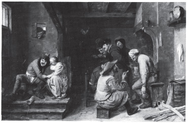
MEYHANE, BROUWER 1605–1638
Adriaen Brouwer bütün bunların dışında kalan bir ‘gündelik yaşam’ ressamıydı. Onun ucuz meyhaneleri, bu meyhanelere düşen insanları işleyen resimleri acı ve doğrudan bir gerçekçilik taşır. Bu gerçekçilik de o alışılmış duygusal ahlak dersini ta baştan ortadan kaldırır. Bundan dolayı Brouwer’in resimlerini —Rembrandt ve Rubens gibi birkaç ressamın dışında— kimse satın almamıştır.
Sıradan ‘gündelik yaşam’ resimleri —Hals gibi bir ustanın elinden çıktıkları zaman bile— çok değişikti.
GÜLEN BALIKÇI ÇOCUK, HALS 1580–1666
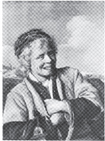
BALIKÇI ÇOCUK, HALS 1580–1666
Yoksul insanlardır bunlar. Yoksullar da sokakta ya da köylerde görülür. Oysa bir evin içinde gösterilen yoksullar insana güvenlik duygusu verir. Bu resimlerdeki yoksullar sattıkları şeyleri sunarken gülümsüyorlar. (Dişleri görünecek biçimde gülümsüyorlar; resimlerde zenginler hiç böyle gülümsemez.) Varlıklılara gülümsüyorlar — kendilerini onlara kabul ettirmek, aynı zamanda bir şey satmak ya da bir iş çıkarmak umuduyla gülümsüyorlar. Böylesi resimler iki şeyi birarada söyler: Yoksullar mutludurlar; varlıklılar dünya için bir umut kaynağıdır.
Yağlıboya resim türleri içinde doğa resimleri savımızın en az uygulanabileceği resim türüdür.
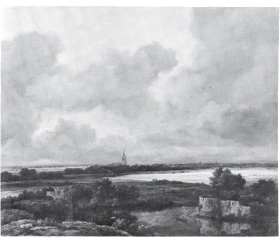
YIKINTILARI GÖSTEREN GENİŞ DOĞA RESMİ, RUISDAEL 1628/9–1682
Son zamanlarda çevrebilime karşı duyulan ilgi artmaya başlamadan önce doğa, anamalcılık eylemlerinin nesnesi olarak düşünülmüyordu. Anamalcılığın toplumsal yaşamın, birey yaşamının yer aldığı bir alan olarak görülüyordu yalnızca. Doğanın çeşitli yanları bilimsel incelemelere konu oluyordu; ne var ki bir bütün olarak doğa sahibolunacak bir şey olarak görülmeye başlanmamıştı henüz.
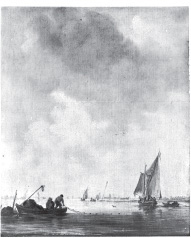
AĞ ATAN BALIKÇILARI GÖSTEREN IRMAK RESMİ, VAN GOYEN 1596–1656
Bunu daha yalın bir dille de söyleyebiliriz. Gökyüzünün yüzeyi yoktur; bu nedenle dokunulamaz ona. Bir nesneye dönüştürülemez gökyüzü ya da bir nicelik verilemez ona. Doğa resimleri de gökyüzünü, uzaklıkları resme geçirme sorunuyla başlar işe.
İlk gerçek açıkhava resimleri —on yedinci yüzyılda Hollanda’da yapılanlar— herhangi bir toplumsal gereksinmeyi doğrudan karşılamayı amaçlamıyordu. (Bunun sonucu olarak Ruysdael aç kaldı, Hobbema resmi bıraktı.) Açıkhava resmi, başlangıcından beri öbür resim türlerinden oldukça bağımsız bir etkinlikti. Bu türün ressamları geleneğin yöntem ve ölçütlerini devralarak büyük ölçüde sürdürmek zorunda kaldılar. Oysa yağlıboya resim geleneğindeki her büyük değişiklikte ilk itki hep açıkhava resimlerinden gelmiştir. On yedinci yüzyıldan başlayarak görüşte, buna bağlı olarak da yöntemde olağanüstü yenilik yaratanlar Ruysdael, Rembrandt (Rembrandt, daha sonraki yapıtlarında ışığı kullanışını açıkhava çalışmalarından edinmiştir), Constable (taslaklarında), Turner ve bu evrenin sonunda Monet ve izlenimciler olmuştur. Bundan başka maddesel bakımdan yoğun, dokunulabilir olan resim bu ressamların yeni buluşlarıyla yavaş yavaş yoğunluğu olmayan, dokunulamaz resme doğru kaymıştır.
Yağlıboya resimle mülk arasındaki özel ilişkiler açıkhava resminin gelişmesinde de belli ölçüde etkili olmuştur. Gainsborough'un çok tanınan Bay ve Bayan Andrews resmini ele alalım.
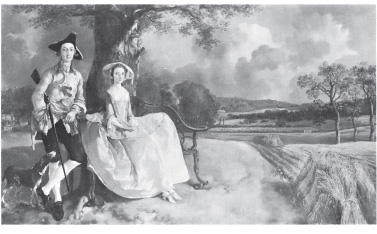
BAY VE BAYAN ANDREWS, GAINSBOROUGH 1727–1788
Kenneth Clark* Gainsborough’nun resmi üzerine şunları yazıyor.
Ressamlığa ilk başladığı sırada gördüklerinden aldığı zevk yüzünden Gainsborough, resimlerine Bay ve Bayan Andrews’u oturttuğu mısır tarlasına benzer çok duyarlı bir biçimde yansıttığı doğa görünüleri koymuştur. Bu büyüleyici resim öylesine büyük bir sevgi ve ustalıkla yapılmıştır ki Gainsborough’nun aynı çizgiyi geliştirerek sürdürmesini bekleriz. Oysa Gainsborough gördüklerini resmetmekten vazgeçmiş, uyumlu resim yapma geleneğini benimsemiş, kendine özgü bu biçemiyle ün kazanmıştır. Gainsborough’nun yaşamöyküsünü yazanlar son zamanlarda portre ressamlığının onun doğa resmi yapmasına zaman bırakmadığını söylemişlerdir. Gainsborough’nun ünlü mektubundan aldıkları ve onun portrelerden bıktığını, Voil de Gamba'sını alıp sevimli bir köye giderek doğa resmi yapmak istediğini söyleyen alıntıyla, olanak bulsaydı Gainsborough’nun gerçekçi bir açıkhava ressamı olacağını kanıtlamak istemişlerdir. Oysa Viol de Gamba’dan söz eden bu mektup Gainsborough’nun Rousseau’culuğunun bir parçasıdır. Gainsborough’nun bu konudaki gerçek düşünceleri, kendisinden özel parkının resmini yapmasını isteyen bir zengin alıcıya yazdığı mektuptadır: “Bay Gainsborough, Lord Hardwicke’e en derin saygılarını sunar ve Sayın Lordlarına her türlü hizmete hazır olduğunu bildirir, ama Doğa’dan gerçek görünüler resmetmeye gelince, kendisi Gaspar ya da Claude’un kötü öykünmelerine yakın bir konu bulamamıştır henüz bu ülkede.”
Lord Hardwicke neden özel parkının resmini yaptırmak istemiştir? Bay ve Bayan Andrews neden portrelerinin arkalarında topraklarından bir parçanın da göründüğü bir resime oturtulmasını istemişlerdir?
Bay ve Bayan Andrews Rousseau’nun düşündüğü Doğa içinde yaşayan bir çift değildir. Toprak ağasıdırlar. Çevrelerindeki her şeye karşı edindikleri ağalık tutumu duruşlarından, vüz ifadelerinden okunur.
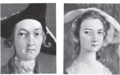
Profesör Lawrence Gowing Bay ve Bayan Andrews’un mülke düşkün oldukları savını kızgınlıkla çürütmeğe çalışıyor:
Bizlerle iyi resimlerin apaçık anlamları arasına John Berger, bir kez daha girmeden, izninizle Gainsborough’nun Bay ve Bayan Andrews’unda bu kişilerin arkalarındaki toprakla o toprağın sahibi olmaktan daha başka bir ilişki içinde olduklarını gösteren kanıtlar bulunduğünu belirteyim. Gainsborough’nun yolgöstericisi Francis Hayman’ın aynı sıralarda Gainsborough’nunkine çok benzeyen bir konuyu işlediği resminde gösterdiği gibi, böyle resimlerdeki insanlar ‘Büyük ilke’den... bozulmamış ve çarpıtılmamış Doğa’nın gerçek Işık’ı üzerine felsefi düşüncelere dalmaktan büyük zevk alıyorlardı.
Profesör’ün savı, sanat tarihini bulandıran karmakarışıklığı gösteren çok iyi bir örnek olduğundan buraya alınmaya değer. Bay ve Bayan Andrews’un çarpıtılmamış Doğa karşısında felsefi düşüncelere dalmaktan zevk aldıkları doğru olabilir elbette. Ama bu gene de, onları kendini beğenmiş toprak ağaları olmaktan alıkoyamaz. Çoğu zaman özel toprakların sahibi olmak felsefi düşüncelere dalmaktan zevk almanın ön koşuludur. Bu zevk de soylu toprak ağaları arasında oldukça yaygın bir şeydir. Oysa bu insanların zevk aldığı bozulmamış ve çarpıtılmamış doğa öbür insanların doğasını kapsamıyordu. O zamanlarda ağanın arazisindeki hayvanları çalmanın ya da avlamanın cezası sürgündü. Birisi patates çalarsa bunun cezası, kendisi de bir toprak ağası olan yargıcın buyruğuyla kamçılanmaktı. Doğal sayılan şeyler konusunda çok kesin belirlenmiş mülk sınırlamaları vardı.
Vurgulamaya çalıştığımız şey, Bay ve Bayan Andrews’un, portrelerinden aldıkları zevk arasında kendilerini toprakağası olarak görmenin verdiği zevkin de bulunduğudur. Resimde topraklarını tüm maddeselliği içinde yansıtan yağlıboyanın kullanılması da bu zevki artırmıştır. Bize ekin tarihinde bunun önemsiz bir şey olduğu öğretildiğinden bu gözlemi burada altını çizerek belirtmemiz gerekiyor.
Avrupa yağlıboya resmini burada gözden geçirişimiz çok kısa, bu yüzden de üstünkörü oldu. Gerçekte yaptığımız bir inceleme taslağından öteye gidemedi —bu tür bir incelemeye belki başkaları girişir. Ama incelemenin çıkış noktası açıklığa kavuştu sanıyorum. Yağlıboya resmin kendine özgü nitelikleri nedeniyle, görülen şeylerin resme geçirilmesinde özel bir töreler dizgesi oluştu. Bu törelerin toplamı yağlıboya resmin yarattığı görme biçimleridir. Çoğu zaman çerçevesi içindeki yağlıboya resmin dünyaya açılan düşsel bir pencere olduğu söylenmiştir. Bu da, kabaca dört yüzyıl içinde oluşan tüm biçem değişikliklerini (Yapmacıkçılık, Barok, Yeni Klasikçilik, Gerçekçilik, vb.) içine alarak geleneğin kendisini nasıl değerlendirdiğini gösterir. Söylemek istediğimiz şey şudur: Avrupa yağlıboya resim ekini bir bütün olarak ele alınır, bu ekinin kendini değerlendirişi bir yana bırakılırsa o zaman yapılan resmin dünyaya açılan çerçeveli bir pencere değil daha çok duvara gömülmüş bir kutu, görünülerin içinde saklandığı bir kasa olduğu anlaşılacaktır.
Bizi sürekli mülkten söz etmekle suçluyorlar. Bunun tam tersidir doğru olan. İncelediğimiz toplumun, ekinin ta kendisidir mülkten başka bir şey düşünmeyen. Ne var ki bir şeye saplanıp kalan kişiye saplantısı, nesnelerin doğasında varmış gibi gelir. Bu yüzden de o şey, olduğu gibi algılanamaz hiç bir zaman. Mülkle Avrupa ekininde ortaya çıkan sanat arasındaki ilişkiler bu ekine doğal gelmektedir. Bu yüzden birisi çıkıp da belli bir ekinsel alanda mülk çıkarlarının ne denli yaygın olduğunu gösterdiğinde bu tutum, gerçeği gösterenin saptantısı olarak yorumlanıyor. Böyle bir yorum, Ekinsel Kurum’un benimsediği kendi yalancı imgesini bir süre daha sürdürmesine yardım ediyor.
Yağlıboya resmin temel özelliği, ‘gelenek’le bu geleneğin ‘ustaları’ arasındaki ilişkinin hemen hemen herkesçe yanlış yorumlanması yüzünden karanlıkta kalmıştır. Olağanüstü koşullarda olağanüstü sanatçılar bu geleneğin ölçütlerinden kurtulmuş, geleneğin değerlerine taban tabana zıt yapıtlar vermişlerdir. Öte yandan aynı sanatçılar geleneğin en üstün temsilcileri olarak tanıtılmışlardır: Ölümlerinden sonra geleneğin bu ressamları içine alması, onların yarattıkları küçük yöntem yeniliklerini benimsemesi, her şeyi temelde sanki hiç bir şey değişmemiş gibi sürdürmesi sanatçıların yanlış tanıtılmasını daha da kolaylaştırmıştır. Rembrandt, Vermeer, Poussin, Chardin, Goya ya da Turner’ı gerçekten izleyenlerin değil de yalnızca yüzeysel olarak onlara öykünenlerin bu denli çok olması bundandır.
Bu gelenekten bir ‘büyük sanatçı’ tipi doğmuştur. Büyük sanatçı yaşamını güçlüklerle savaşarak geçiren birisidir. Maddesel koşullarla, anlaşılmamakla, biraz da kendisiyle savaşarak yaşayan birisi. Bu sanatçı Melek’le güreşen Yakup olarak düşünülmüştür. (Bunun örnekleri Michelangelo’dan Van Gogh’a dek uzanır.) Sanatçı başka hiç bir ekinde böyle düşünülmemiştir. Öyleyse bu ekinde neden böyle düşünülüyor? Açık sanat pazarında geçerli olan koşullardan daha önce söz etmiştik. Bu savaş yalnızca yaşama savaşı değildir. Çünkü sanatçı resmin maddesel mülkü, mülkle birlikte toplumsal sınıfı kutlamaktan başka bir şey yapmadığını anladıkça içinde bulunduğu geleneğin yorumuna, kendi sanatının anlatım diline ters düştüğünün de bilincine gittikçe daha çok varıyordu.
Olağanüstü yapıtlarla sıradan yapıtların oluşturduğu iki tür resim, bu savın açıklanması açısından önemlidir. Ama söz konusu iki tür eleştirel ölçütler olarak mekanik bir biçimde uygulanmaktadır. Eleştirmen bu uyumsuzluğun neden doğduğunu kavramalıdır. Her olağanüstü yapıt başarıyla biten uzun bir savaşın sonunda doğmuştur. Böyle bir savaş verilmeksizin sayısız sıradan yapıt yapılmıştır. Bunların yanında, çok uzun sürmüş ama başarısızlıkla sonuçlanmış başka savaşlar da verilmiştir.
Görüşü geleneğe göre biçimlenmiş belki de on altısından, beri çırak ya da öğrenci olarak çalışmış bir ressamın kendi görüşünü olduğu gibi kabul edebilmesi, bu görüşü o zamana dek kullandığı uygulamalardan kurtarabilmesi gerekiyordu. Kendisini ressam yapan ölçüleri tek başına ele alıp değerlendirebilmesi gerekiyordu. Ressamlara yakıştırılan görme biçiminden kurtulmuş bir ressam olarak görebilmesi gerekiyordu kendisini. Bu da o ressamın kendisini, başka hiç kimsenin önceden göremediği bir şeyi yaparken görmesi demekti. Bunu gerçekleştirebilmek için ne büyük bir çaba gerektiğini Rembrandt'ın kendi portrelerinde de görebiliriz:
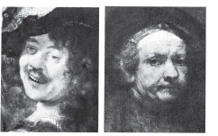
Bunların birincisi 1634’te Rembrandt yirmi sekiz yaşındayken, İkincisiyse otuz yıl sonra yapılmıştır. Oysa bu iki resim arasındaki ayrım, aradan geçen yılların ressamın görünüşünde, kişiliğinde yarattığı değişiklikten çok daha başka bir şeydir.
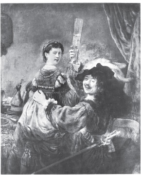
SASKIA'YLA BİRLİKTE KENDİ PORTRESİ, REMBRANDT 1606–1669
Birinci resmin Rembrandt’ın yaşamını gösteren dizi içinde özel bir yeri var gibidir. Rembrandt bunu evliliğinin ilk yılı içinde yapmıştır. Resimde karısı Saskia’yı gösteriyor bize. Saskia altı yıl sonra ölecektir. Bu resimde sanatçının, yaşamının mutlu evresini özetlediği söylenir. Oysa insan, duygusallığı bir yana bırakarak yaklaştığında resimdeki mutluluğun hem biçimsel hem de yaşanmayan bir şey olduğunu görecektir. Rembrandt burada, geleneksel yöntemleri geleneksel amaçlar için kullanmıştır. Kendisine özgü biçemi belli belirsiz başlamıştır. Ama bu, geleneksel rolleri oynayan yeni bir oyuncunun biçeminden öte bir şey değildir henüz. Bütün olarak resim modelin talihliliğini, toplumsal sınıfını, zenginliğini gösteren bir reklamdır. (Burada model, Rembrandt’ın kendisidir.) Bu tür reklamların hepsi gibi bu da içtenlikten yoksundur.
KENDİ PORTRESİ, REMBRANDT 1606–1669
İkinci resimde Rembrandt, geleneği kendisinden yana çevirmiştir. Geleneğin dilini koparıp almıştır elinden. Yaşlı bir adamdır artık burada Rebmrandt. Var olma sorununun sezilmesi —bir sorun olarak varoluş— dışında her şey yok olmuştur. Rembrandt’ın içindeki ressam —bu yaşlı adama göre hem üstünlükleri hem de eksiklikleri olan birisi— yalnızca bu sorunu anlatmanın yollarını bulmuştur. Üstelik bunu, özellikle bu sorunu dışarda bırakmak amacıyla geliştirilmiş bir geleneğin araçlarını kullanarak başarmıştır.